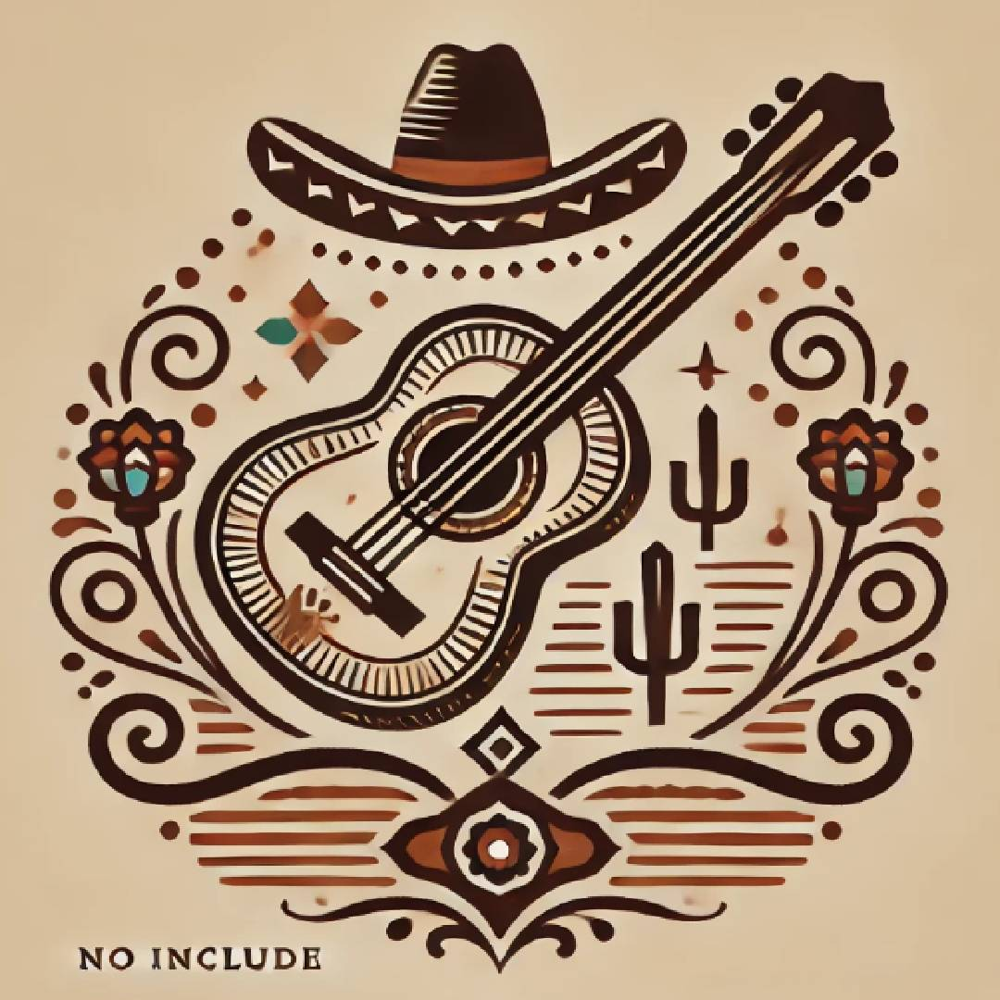

NOSOTROS

HISTORIA
La historia de la cuadrilla surgio de unos niños amantes de la musica con ganas de darse a conocer produciendo su popia musica.
Un dia subiendo covers de canciones a tik tok fueron contratados por Damian Zr (su manager) y asi subiendo su primer sencillo llamdo "no volvera".
MISIÓN
la mision de la cuadrillla es sacar buena musica para que todas las personas que la esuchen puedan sentirse idenficados
con las letras tan reales que pueden escribir.
con las letraas tan reales que dicen
vision
VISIÓN
La vision de la cuadrilla es ser reconocidos mundialmente por su musica que originalmente ellos crean.